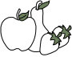

Сначала, Vollkorn был написан на бумаге обычной ручкой.
Именно поэтому данный шрифт имеет черты рукописного шрифта. Vollkorn
возник, как первая попытка Фридриха Альтхаузена смирить дизайн шрифта. Шрифт должен был быть
тихим, скромным
и хорошо работающим текстовым шрифтом, как настоящий фермерский хлеб
с домашним маслом.
В отличие от примеров в книжных лицах от эпохи Возрождения
до сегодняшнего дня, у него темные и мясистые
засечки.

Базовая латиница
Шрифт имеет 90 глифов базовой латиницы


Категория
Шрифт Vollkorn является вариативным шрифтом
и относится к категориям антиквы, декоративные,
для текстов
Начертания
Имеет 12 прекрасных фермерских начертаний: 9 прямых и 9 италик
Лицензия
Имеет лицензию SIL OFL 1.1.
OFL — это “бесплатная
и открытая лицензия, которая специально разработана
для шрифтов и связанного
с ними программного обеспечения на основе
опыта в создании лингвистического ПО
и шрифтов"
График работы
с понедельника по пятницу
с 9:00 - 20:00
суббота, воскресенье - выходной
Год производства
Впервые опубликованный в 2005 году по лицензии Creative Commons Vollkorn вскоре был загружен тысячи раз и использован во всех видах веб-проектов.

Начертания


Таблица символов